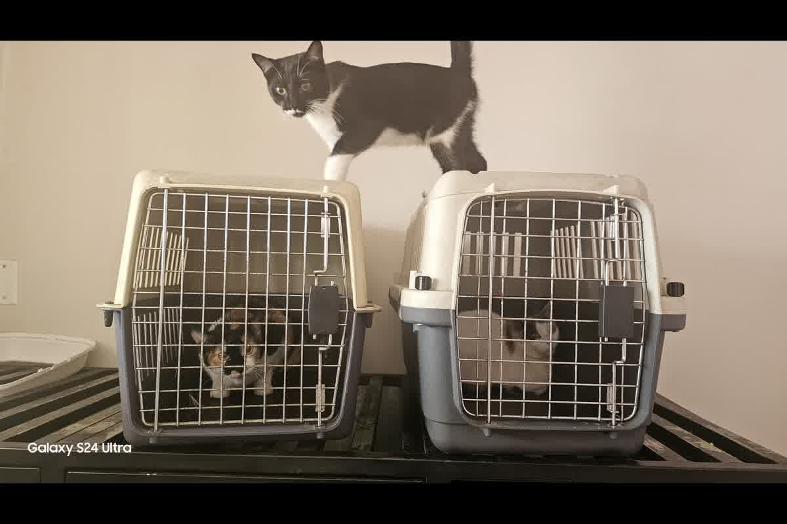

Análisis técnico de la Dra. Jessica Camacho sobre las consecuencias legales y sanitarias de viajar con mascotas sin la documentación reglamentaria. Casos de deportación y cuarentena.

Intentar cruzar una frontera internacional con un animal que carece de respaldo documental oficial activa protocolos de bioseguridad que terminan invariablemente en la deportación o la eutanasia sanitaria del ejemplar. Ignorar qué pasa si llevas a tu mascota sin papeles: casos reales y consecuencias es el error más costoso que vemos en consulta en Trujillo, donde familias confían en carnés de vacunación informales para enfrentar sistemas de control rígidos. Un oficial de aduanas no analiza intenciones ni empatiza con el viajero; solo verifica que la cadena de custodia sanitaria sea reversible y verificable.
Cuando un perro llega a destinos como Australia o Japón sin haber cumplido con el periodo de espera serológico o el pre-aviso de importación, el Servicio de Cuarentena Animal (AQS o DAFF) ordena el aislamiento inmediato. Esta medida no se cumple en el domicilio del propietario, sino en instalaciones gubernamentales cerradas donde el costo diario puede superar los 100 dólares, excluyendo gastos veterinarios adicionales. En nuestra práctica en Perú, hemos asesorado casos donde el animal debe permanecer retenido durante 180 días porque el propietario omitió la prueba de titulación de anticuerpos neutralizantes de la rabia.
El impacto del aislamiento prolongado genera un estrés metabólico que compromete la salud del animal, derivando en cuadros de disbiosis o lipidosis hepática en el caso de los gatos. La falta de control sobre el entorno y la nutrición durante la cuarentena oficial anula cualquier preparación previa que se haya realizado en Trujillo. Los detalles sobre los fallos en estos modelos regulatorios se encuentran documentados en nuestra serie técnica sobre Cuarentena en la Importación Internacional de Perros y Gatos: Fundamento Epidemiológico, Modelos Regulatorios y Puntos Críticos de Falla.
Las aerolíneas enfrentan multas severas si desembarcan un animal que no cumple con los requisitos del país de destino, lo que las obliga a retornar al animal en el siguiente vuelo disponible a cuenta del dueño. Si el propietario no dispone de fondos para costear el flete de retorno de emergencia, las autoridades sanitarias del país de llegada proceden con el sacrificio preventivo para evitar el riesgo de introducción de zoonosis. El error que más vemos en consulta es asumir que el personal del counter del aeropuerto tiene la última palabra; la decisión final es siempre de la autoridad sanitaria del punto de entrada.
En agosto de 2024, el CDC de Estados Unidos implementó la "Dog Import Rule", que exige que todo perro que ingrese desde países con riesgo de rabia, como Perú, tenga un formulario de importación validado previamente. Intentar ingresar sin este documento resulta en la denegación de entrada y el transporte forzoso de vuelta a Lima. El animal queda entonces atrapado en una zona de tránsito internacional sin asistencia médica adecuada, aumentando el riesgo de colapso por deshidratación y agotamiento extremo del eje HPA.
Un certificado de salud donde el número de microchip difiere en un solo dígito del código detectado por el escáner convierte al animal en un individuo "sin papeles" ante la ley. Para la normativa internacional, un error de transcripción es equivalente a la ausencia total del documento, ya que rompe la trazabilidad sanitaria exigida por el Reglamento (UE) 576/2013. Lo que la gente no anticipa es que un sello veterinario mal colocado o una fecha de desparasitación ilegible anula la validez de todo el expediente de exportación acumulado durante meses.
En Trujillo, auditamos expedientes donde la vacuna contra la rabia se aplicó antes de la inserción del microchip, lo que invalida legalmente la inmunización ante los ojos de cualquier inspector de la Unión Europea. Esta inconsistencia cronológica es irreversible y obliga al viajero a reiniciar el proceso desde cero, incluyendo los 30 días mínimos de espera post-vacunación y, en su caso, los tres meses de espera tras la serología. El costo de estos errores documentales no es solo financiero, sino que destruye la logística de mudanza de toda una familia.
La obtención del Certificado Zoosanitario de Exportación (CZE) emitido por SENASA es el único respaldo legal que garantiza que el animal ha pasado por los controles del país de origen. Este documento debe ser tramitado con un margen máximo de 10 días antes del vuelo, ya que su vigencia es extremadamente corta y está sujeta a la fecha del examen clínico. Si el vuelo se retrasa y el CZE caduca, el animal no podrá embarcar ni ingresar al país de destino, quedando en un vacío legal en plena terminal aérea.
La cadena documental debe ser custodiada por un médico veterinario especializado que comprenda la taxonomía del error documental y su impacto en la bioseguridad. No basta con tener los papeles; es necesario que cada tratamiento, desde la desparasitación interna contra Echinococcus multilocularis hasta la titulación serológica, esté registrado con la marca comercial y el número de lote de la dosis utilizada. La falta de precisión técnica en los registros es la causa del 90% de los rechazos en aduanas internacionales, un riesgo que se mitiga con una auditoría clínica rigurosa previa a la salida de Perú.
La verificación del microchip debe realizarse en cada consulta para asegurar que el transpondedor sigue operativo y en su posición anatómica correcta. Un microchip que deja de funcionar durante el vuelo convierte al animal en un sujeto indocumentado al aterrizar, sin importar que se presenten certificados de salud en papel. Contar con un respaldo digital y físico de la implantación, junto con las etiquetas originales del fabricante, permite gestionar contingencias que de otro modo terminarían en la retención indefinida del animal en un canil de frontera.
La validación documental y las fechas correctas evitan deportación o cuarentena. Zoovet Travel audita cada punto crítico de su expediente en Trujillo para garantizar que la cadena documental cumpla con los estándares de bioseguridad internacional.
Calle Cuba 241, Urb. El Recreo — Trujillo, Perú